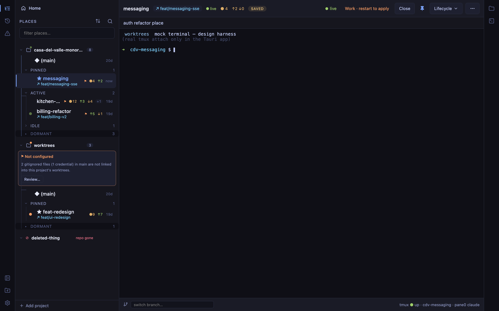
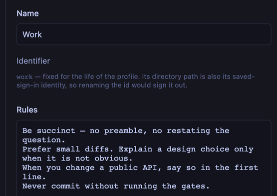
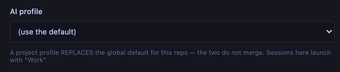
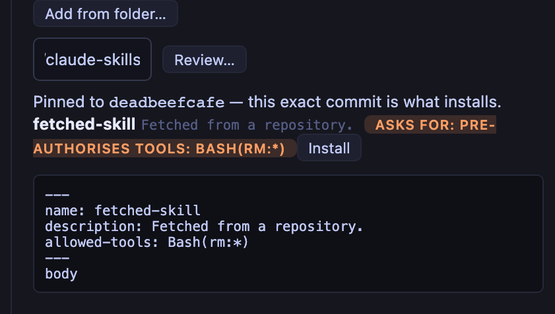
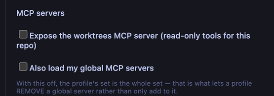
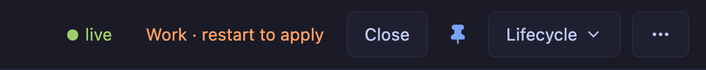
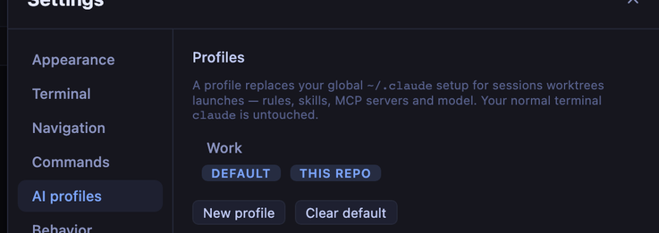

Every new session starts from scratch. You re-explain the same conventions, re-enable the same skills, and hope you remembered. AI profiles fix that once.
Define rules, skills, MCP servers and a model in the worktrees UI. Every session worktrees
launches gets them. Your normal claude in a terminal is completely untouched.

The workflow this exists for. Change a rule, and every session that starts afterwards has it —
no copy-pasting into a fresh chat, no per-repo CLAUDE.md to keep in sync.

Plain text. It becomes the session's system prompt — visible in /context,
surviving /clear, and not eating your conversation history.
~/.claude/CLAUDE.md.
It cannot suppress it. Nothing we could do would — claude reads that file regardless — so
the UI says so instead of letting you find out.
A client repo and a side project rarely want the same instructions. Set a global default, then override it per project.

A project profile replaces the default — the two do not merge. That is a deliberate choice: merge semantics are the thing nobody remembers correctly at 6pm.
worktrees open from a terminal applies the same profile the app wouldWORKTREES_PROFILE=none opts a single launch outInstall a skill from a folder or a git URL, and enable it per profile. An installed skill's description is loaded into every session before anything invokes it — so installing one is closer to running someone else's prompt than to copying a file. The UI treats it that way.

Paste a URL and hit Review. worktrees clones it, reads it, throws the clone away,
and shows you the whole SKILL.md plus anything it asks for beyond reading files.
Nothing is installed yet.
# the same gate from the CLI $ worktrees skills add --git https://github.com/acme/claude-skills ! 'deploy-helper' asks for capabilities beyond reading files: ! pre-authorises tools: Bash(rm:*) Review it, then re-run with --yes to install.
A session running inside a worktree can drive worktrees itself, as tools, instead of reverse-engineering your layout with raw git.

Toggle it on per profile. It lists places, reports status, and reads notes — and that is all, unless you say otherwise.
The quiet failure mode of any config layer is not knowing whether it applied. The badge answers that without being asked.

“Restart to apply” covers rules, model, MCP and settings. Skill edits already reach a running session, so it does not claim them.
Clicking through the editor without changing anything does not mark your sessions stale.
If a profile can't be applied, the pane opens on a shell with the reason — it does not quietly launch claude without your restrictions.
Claude keys its saved sign-in to the config directory it is given, so every profile gets its own. worktrees never copies, reads or stores a credential to make that work.

A new profile's first pane shows Not logged in · Run /login. That is correct, and
it reads as broken unless something says so in advance — so the list tags it
needs sign-in before you ever open it.
Three things are easy to assume here, and all three are wrong. Better to read them now than to discover them.
A worktree's own committed .claude/settings.json, .mcp.json and
CLAUDE.md still load. A profile controls your user scope, not the project's.
~/.claude/CLAUDE.md and anything it imports load in every profiled session.
Profiles add; they do not remove.
Trust is mirrored from your own claude, never invented. A freshly cloned repo still gets asked — turning on a profile is never weaker than running claude normally.
# in the app: Settings → AI profiles → New profile # or by hand, shared with the CLI: $ $EDITOR ~/.config/worktrees/profiles.json # skills $ worktrees skills add ~/my-skill $ worktrees skills list # open a worktree — the profile applies to both the app and the CLI $ worktrees open feat-x # first launch of a profile asks you to /login once, in the pane